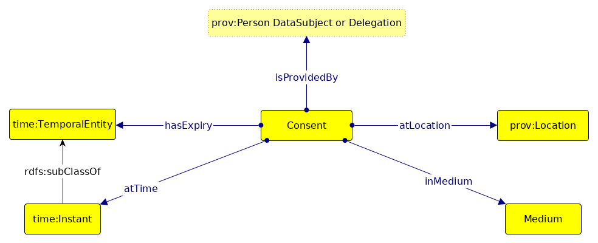

GConsent: Description back to ToC
Consent

Given Consent

Context of Given Consent

Purpose of Given Consent

Actions in Purpose

Status

Invalidating Consent

Examples and Use-Cases back to ToC
Given Consent

Given Consent via Delegation

Context of Given Consent

Purpose of Given Consent

Invalidating Consent

How to use GConsent for GDPR Compliance back to ToC
Native RDF-based Compliance Model
Integration with RDBMS
Creating Mock Datasets
Mappings and Alignments with Other Ontologies back to ToC
Defining Context of Given Consent back to ToC
Time Ontology
Geo Ontology
Schema.org
Provenance back to ToC
PROV-O
P-Plan
GDPR and Legal Ontologies back to ToC
GDPRtEXT
GDPRov
ODRL
Comparison with Other Consent Ontologies back to ToC
SPECIAL Vocabularies
Ontolgy by Bartolini et. al
PrOnto
Validation using SHACL Shapes back to ToC